Chile
2024-06-24
Argentina is a South American country of 19.8 million inhabitants with a long Pacific coast line which includes the strategic Cape Horn between Pacific and Atlantic. Chile declared independence from Spain in 1818, with it’s navy having been founded the year prior.
Chile’s naval development has often paralleled Argentina and Brazil, with the three locking into regional arms races at various times. During the time frame of submarine operations we can identify various periods of growth. The first in the 1910s with the delivery of one battleship, 5 destroyers, and 6 submarines from the UK. Then came the late 1920s with 6 new destroyers and 3 new submarines from the UK. The 1950s and 1960s saw the delivery of war surplus material from the US (2 cruisers, 4 destroyers, 2 submarines, 7 frigates). From the 1970s onward a mix of new and second-hand material was acquired in including 1 Swedish cruiser, 4 British missile destroyers, and 14 missile frigates from the UK, the Netherlands, and Australia. This period also saw the acquisition of 6 new submarines in 3 pairs.
Submarine operations started in 1917 with the acquisition of 6 Holland 602 type boats built in the US. These were initially bought by the UK, but which the US wouldn’t deliver to a waring nation. Three O type boats complemented them in the 1920s, giving the Chile the largest submarine fleet in Latin America during WW2 (9 boats). Eight boats were received in four subsequent pairs post-war, with four of these (two Type 209 and two Scorpene) being in service today.
Submarines operated by Chile
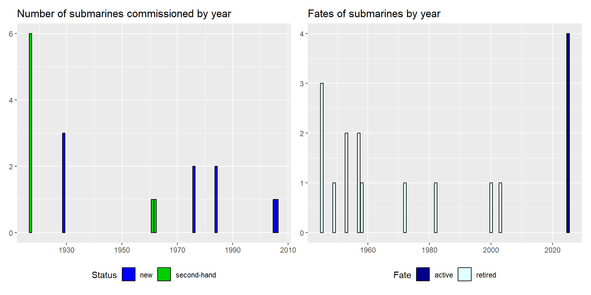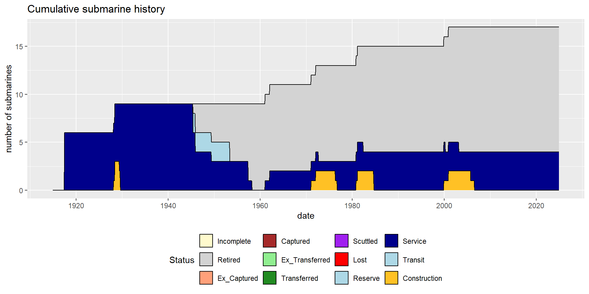
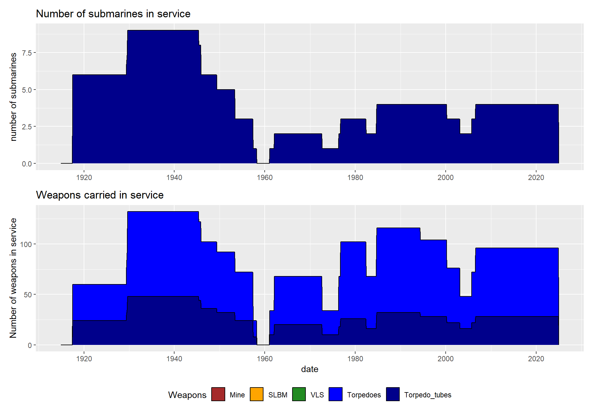
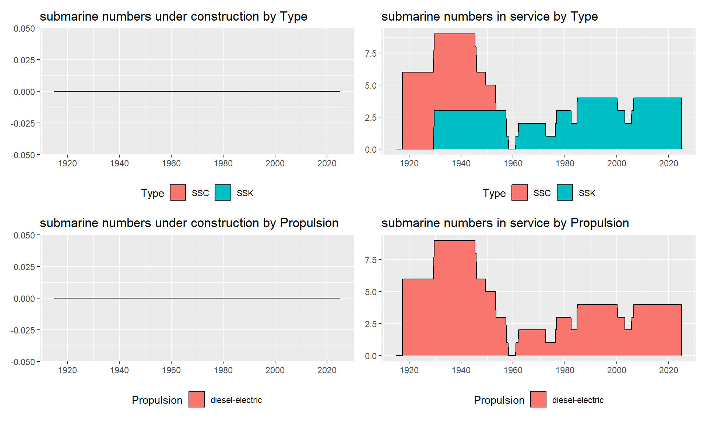
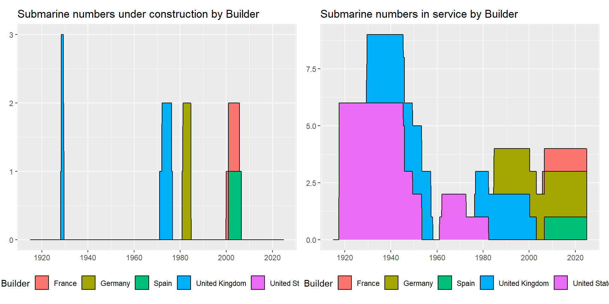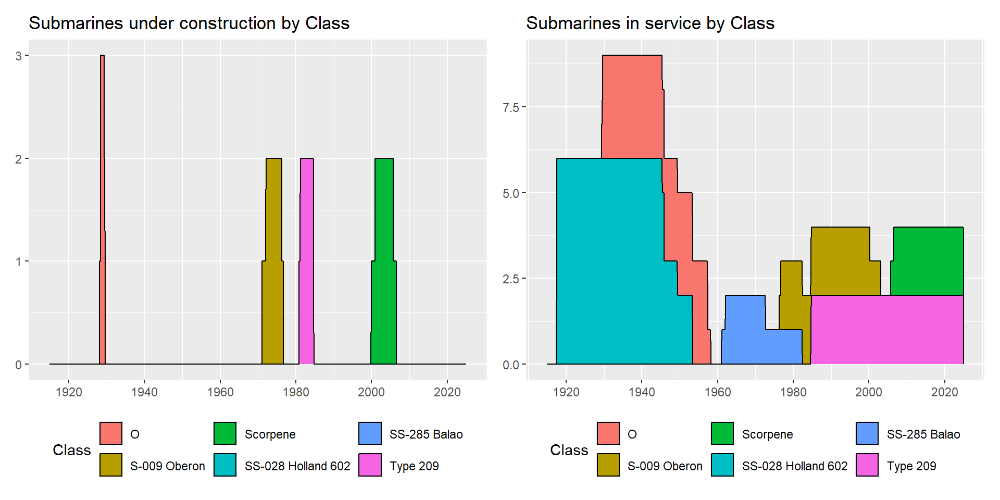
Individual submarines by class
Specification summaries
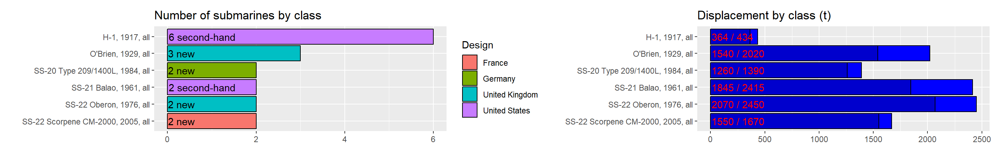
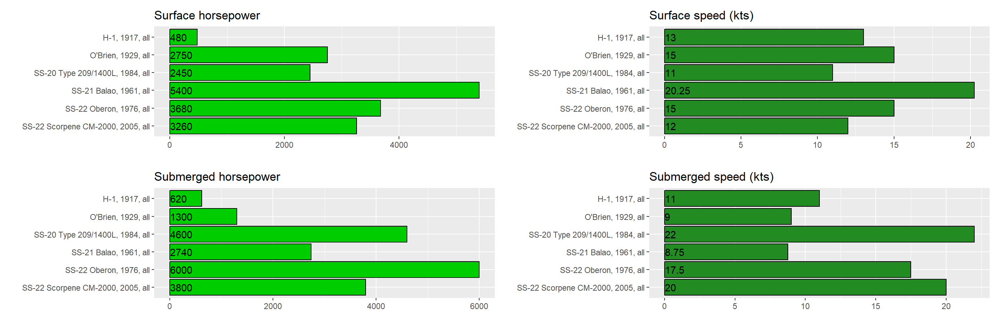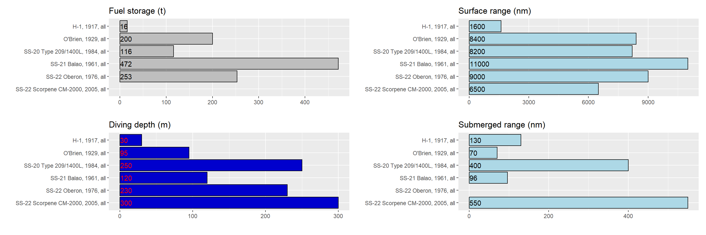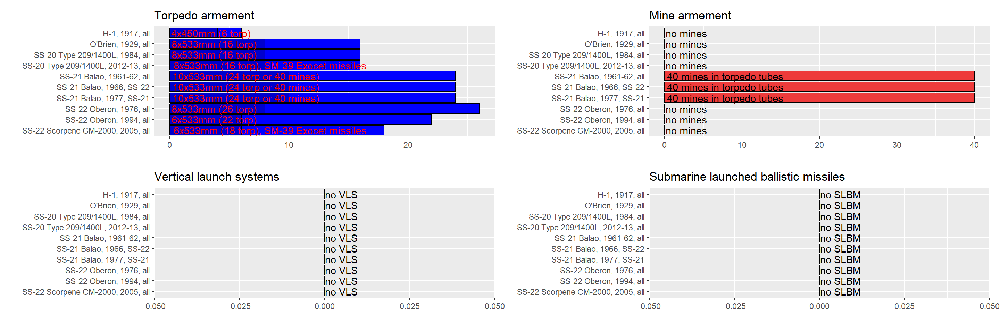
class
H class
Holland 602 boats contracted by the Royal Navy to the US, but which couldn’t be delivered because of the ongoing involvement in World War 1.
| Version | Boats | Number | Displacement | Propulsion | Power | Fuel | Speed | Range | Depth |
|---|
| Version | Boats | Year | Torpedo_text |
|---|
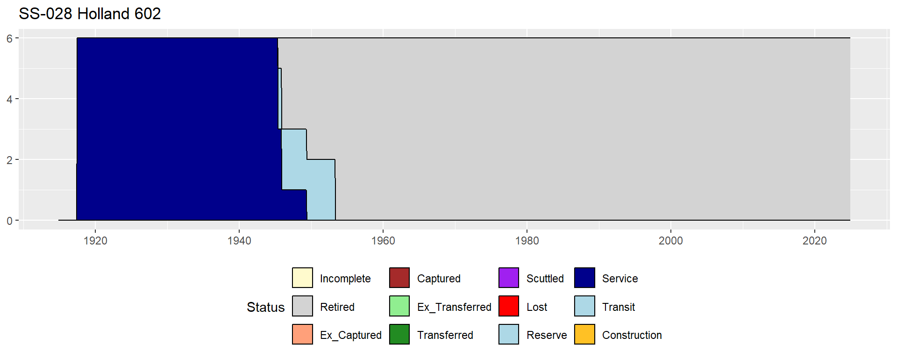
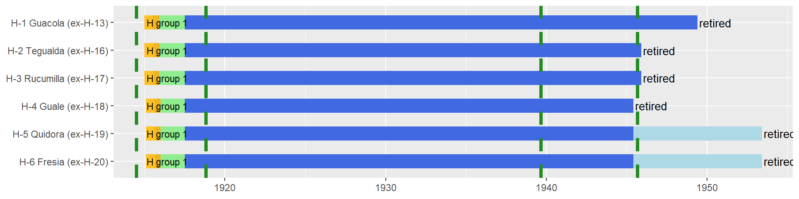
O’Brien class
A modified O class type built in the UK.
| Version | Boats | Number | Displacement | Propulsion | Power | Fuel | Speed | Range | Depth | |
|---|---|---|---|---|---|---|---|---|---|---|
| 96 | O’Brien | all | 3 | 1540/2020t | diesel-electric | 2750/1300hp | 200t | 15/9kts | 8400/70nm | 95m |
| Version | Boats | Year | Torpedo_text | Gun_text | |
|---|---|---|---|---|---|
| 111 | O’Brien | all | 1929 | 8x533mm (16 torp) | 1x120mm L45 |
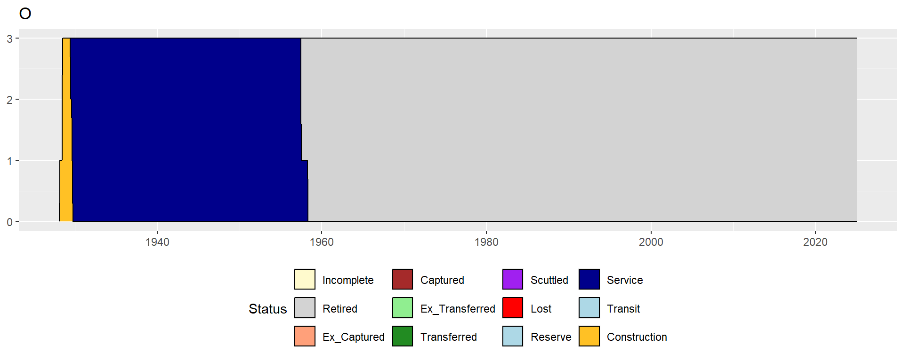
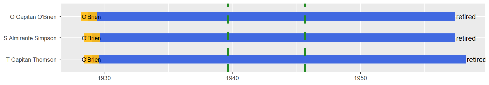
Balao class
Two former unmodified US Balao class boats.
| Version | Boats | Number | Displacement | Propulsion | Power | Fuel | Speed | Range | Depth | |
|---|---|---|---|---|---|---|---|---|---|---|
| 97 | SS-285 Balao | all | 2 | 1845/2415t | diesel-electric | 5400/2740hp | 472t | 20.25/8.75kts | 11000/96nm | 120m |
| Version | Boats | Year | Torpedo_text | Gun_text | |
|---|---|---|---|---|---|
| 112 | SS-285 Balao | all | 1961-62 | 10x533mm (24 torp or 40 mines) | 1x127mm L25 + 1x40mm L56 |
| 113 | SS-285 Balao | SS-22 | 1966 | 10x533mm (24 torp or 40 mines) | - |
| 114 | SS-285 Balao | SS-21 | 1977 | 10x533mm (24 torp or 40 mines) | 1x127mm L25 |


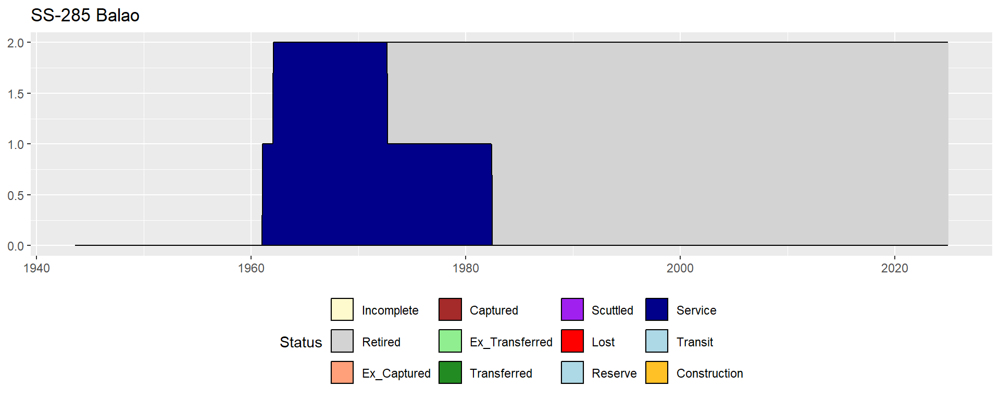
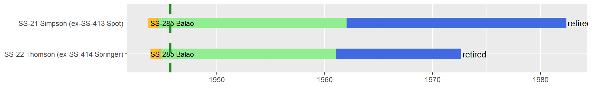
Oberon class
Two newly built Oberon boats from the UK.
| Version | Boats | Number | Displacement | Propulsion | Power | Fuel | Speed | Range | Depth | |
|---|---|---|---|---|---|---|---|---|---|---|
| 98 | S-009 Oberon | all | 2 | 2070/2450t | diesel-electric | 3680/6000hp | 253t | 15/17.5kts | 9000/NAnm | 230m |
| Version | Boats | Year | Torpedo_text | |
|---|---|---|---|---|
| 115 | S-009 Oberon | all | 1976 | 8x533mm (26 torp) |
| 116 | S-009 Oberon | all | 1994 | 6x533mm (22 torp) |

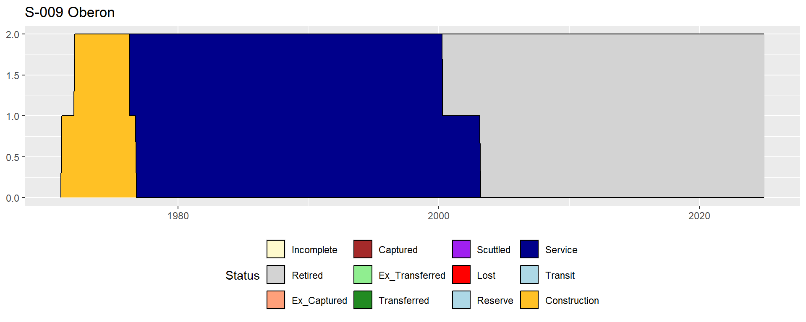
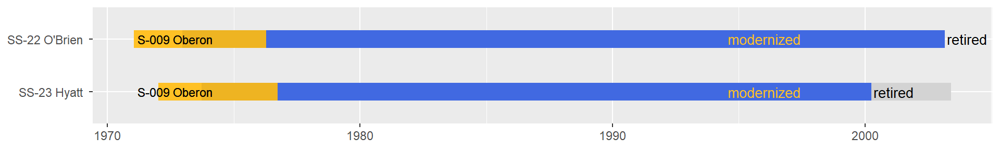
Type 209 class
Two German built Type 209/1400L boats.
| Version | Boats | Number | Displacement | Propulsion | Power | Fuel | Speed | Range | Depth | |
|---|---|---|---|---|---|---|---|---|---|---|
| 99 | Type 209/1400L | all | 2 | 1260/1390t | diesel-electric | 2450/4600hp | 116t | 11/22kts | 8200/400nm | 250m |
| Version | Boats | Year | Torpedo_text | Missile_text | |
|---|---|---|---|---|---|
| 117 | Type 209/1400L | all | 1984 | 8x533mm (16 torp) | - |
| 118 | Type 209/1400L | all | 2012-13 | 8x533mm (16 torp) | SM-39 Exocet |
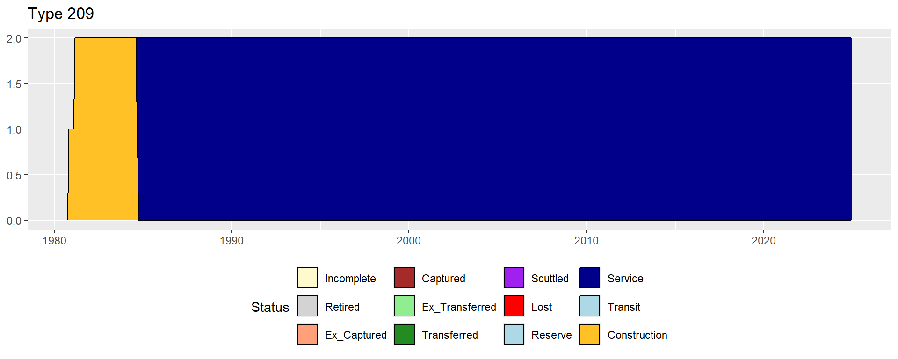
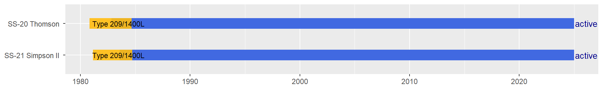
Scorpene class
Two newly built Scorpene CM-2000 boats. One was built in France, the other in Spain as the program was a joint venture at this point in time.
| Version | Boats | Number | Displacement | Propulsion | Power | Fuel | Speed | Range | Depth | |
|---|---|---|---|---|---|---|---|---|---|---|
| 100 | Scorpene CM-2000 | all | 2 | 1550/1670t | diesel-electric | 3260/3800hp | NAt | 12/20kts | 6500/550nm | 300m |
| Version | Boats | Year | Torpedo_text | Missiles | |
|---|---|---|---|---|---|
| 119 | Scorpene CM-2000 | all | 2005 | 6x533mm (18 torp) | SM-39 Exocet |
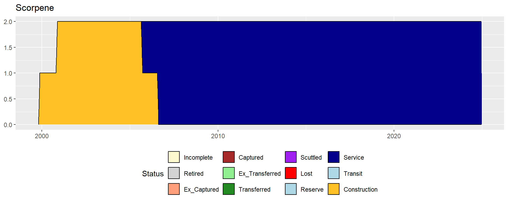
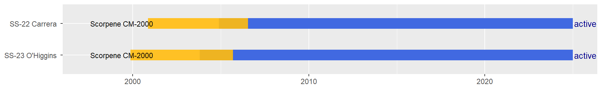
Full summary
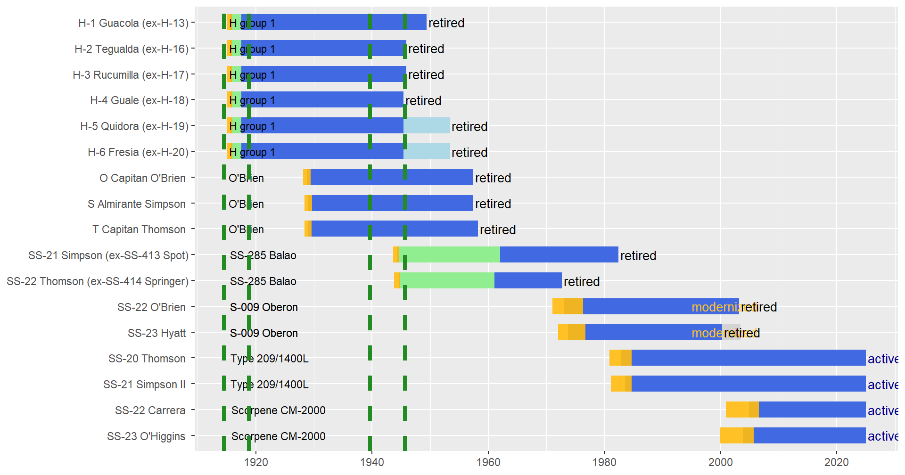